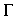

Signs for technical/specialized vocabulary
David Bar-Tzur
Links updated monthly with the help of LinkAlarm.

Warped Spiral Galaxy ESO510-131; graph of z = sin(x) * sin(y).2
EXPLANATION OF THE GLOSSING SYSTEM
(to understand how I describe the signs in this dictionary).
For content knowledge of how to use the physics terms in context, see Guided tutorial in physics for interpreters.
For negotiating and developing temporary signs, see Preparation and sign negotiation
For vocabulary lists to determine helpful signs for a specific discipline, see Vocabulary lists by topic.
- Gabon
- [G], PO > NDS, traces moustache. To see the reference source for the sign(s) for this country or to look up other countries in the same geographical area, see Indigenous signs for countries. To find signs for cities within this country (some have no entries) see Indigenous signs for cities.
- Gabriel (Islam)
- [Bb] holds dorsum (backhand) against forehead + mime flapping wings. For a film of this Saudi sign, click on Gabriel.
- gadolinium
- G-D. For more information on this and other elements, see The elements. And for fun, see Elements by Tom Lehrer. To see this song with captions, go to The Elements song by Tom Lehrer.
- gaffer
- FT of [5:] touch DS shoulder, then change to [A dot], PO > NDS, FO away, and rises in an outward arc ELECTRICITY AGENT.
- gag
- The right "five" hand touches the chest and the facial expression should reflect gagging.
- gain
- INCREASE.
- gala
- CELEBRATE. For a QuickTime movie of this sign, see ASL browser - gala.
- galactic cannibalism
- BIG [5:], PO up, FO away, is held above [S], PO down, FO away. DH descend and strikes NDH while closing to [S] + (2h)[C], POs ><, FOs away, hands rush together (GRAVITY GROUP-TOGETHER = GALAXY) EAT-UP SMALL, where EAT-UP is [5:] touches FT to palm of [B], PO > DS, FO up, and DH closes and opens as is travels up the palm, as if taking small bites of it, while gnashing the teeth with each bite.
- galactic corona
- GALAXY C-O-R-O-N-A, where the first sign is [5:], PO up, FO away, is held above [S], PO down, FO away. DH descend and strikes NDH while closing to [S] + (2h)[C], POs ><, FOs away, hands rush together.
- Galatians (Πρὸς Γαλάτας)
- G-A-L.
- Gallaudet, Thomas Hopkins
- [G], PO > NDS, is held at DS eye and drawn towards DS while closing to [bO] like GLASSES but only one
movement. (< the glasses he wore.)
- Gallaudet, Thomas Miner
- [M] touch NDS of upper chest, then DS. Son of Thomas Hopkins Gallaudet and President of what would become Gallaudet University.
- Gallaudet (University)
- [G], PO > NDS, is held at DS eye and drawn
towards DS while closing to [bO] like GLASSES but only one
movement. (< the glasses worn by Thomas Hopkins Gallaudet.)
- gall bladder
- G-A-L-L B-L-A-D-D-E-R.
- Gallimore, Laurene
- Thumb of [L], FO up, taps at temple.
- gallium
- G-A. For more information on this and other elements, see The elements. And for fun, see Elements by Tom Lehrer. To see this song with captions, go to The Elements song by Tom Lehrer.
- gallium arsenide
- G-A-S.
- gallop
- HORSE + (2h)[V] are held DH in front of NDH and bend and move as if galloping. For a QuickTime movie of this sign, see ASL browser - gallop.
- galoshes
- SHOES(1x) + [Bb], PO > back, taps 2x close to elbow. For a QuickTime movie of this sign, see ASL browser - galoshes.
- Galut
- ~ (the act of exile)
- GOD PUNISH JEWISH HOW? LIVE OUTSIDE ISRAEL MUST.
- ~ (as a place)
- OUTSIDE ISRAEL.
- galvanometer
- "G" METER.
- game
- (2h)[A], POs > signer, FOs ><, click knuckles together 2x.
- gamma
- lowercase ~,

- Draw the shape of the letter in the air with the index finger.
- uppercase ~, 
- (2h)[1], NDPO > DS, DPO down, FTs touching.
- gamma function
- (2h)[1], NDPO > DS, DPO down, FTs touching + FUNCTION.
- gamma ray
- Draw the shape of a lowercase gamma () in the air with the index finger + R-A-Y.
- gamma-ray burster
- GAMMA R-A-Y + [O^], PO away, FO up, flashes open and closed repeatedly.
- Gan Eden
- ~ (primary meaning)
- GARDEN O-F E-D-E-N.
- ~ (metaphorically, Heaven)
- (1) Hands are held high and the sign ENTER is executed. (2) Similar to (1) but the hands begin from neutral space and move up to a high level. (1) & (2) (< entering Heaven.) (3) (2h)[B^] are held high and revolve around each other and separate.
- gang
- [I] or [S], PO twisted > DS, strokes the DS chest with force and tongue pushes out DS cheek. For a QuickTime movie of this sign, see ASL browser - gang.
- garter
- FT of [G] are drawn across upper leg + FT of [5:] strike midpoint of garter.
- garter-belt
- (2h)[H dot] close 2x like the sign NO at respective sides of upper leg.
- gas
- ~ (accelerator, as in "step on the ~")
- Left hand [B], PO away, FO up, is held in place as if it were the clutch (this sign is the same for an automatic transmission) and the right hand [open 8], PO away, FO up, moves down as if stepping on the gas.
- ~ (gasoline)
- Thumb of [A dot] is inserted twice into a slightly open [S], PO > DS, FO away.
- ~ (state of matter, not liquid or solid)
- (1) G-A-S. (2) [C], PO > DS, FO away, is held like the neck of a container and [G], PO down, spirals away from the opening as if escaping.
- ~ cap
- Thumb of [A dot] is inserted once into a slightly open [S], PO > DS, FO away + [5:], PO down, is placed against top of [S], PO > DS, FO away.
- gasoline
- Thumb of [A dot] is inserted twice into a slightly open [S], PO > DS, FO away.
- gasp
- The right "five" hand touches the chest and the facial expression should reflect gasping.
- gate array
- G-A.
- gate controller switch
- G-C-S.
- gather (together, people)
- (1) (2h)[S>5wg], POs down, move > one another. (2) Same as (1) + TOGETHER.
- gauge (meter)
- DH [1], PO away, FO up, is held behind NDH [C], PO > DS, FO up, as if it were the frame to the meter, and the DH twists slightly as if it were the moving needle.
- gaunt
- THIN with hu. For a QuickTime movie of this sign, see ASL browser - gaunt.
- gauss (deprecated)
- "G".
- Gaussian curve
- C-U-R-V-E,
1outline-CL'draw bell-shaped curve'.
Bforearm-CL'x-axis'-------------->.
- Gay
- (1) (Many prefer that it be fingerspelled) G-A-Y. (2) [G], FO > ND side, touches or taps chin. Better to sign it far away from the chin. For a QuickTime movie of this sign, see ASL browser - Gay. (3) Curled index and thumb grasp earlobe and tug several times. This sign is used primarily in California.
- gay bashing
- GAY BEAT-UP.
- gears
- NDH [5:], PO > DS, DH [1] traces vertical jagged edge alongside of NDH.
- geek
- (1) [G] grasps nose and travels slightly down it as if glasses were slipping down nose. (2) NDH [B], PO > signer, FO > DS, is held against left side of chest as if it were a pocket and DH [1] puts several pens into the "pocket".
- Gehenim
- (1) [H], PO > signer is held high at NDS and moves diagonally down to DS. (< a body being hurled into the traditional place for Hell.) (2) INDEX-Hell FIRE.
- gel (stage lighting)
- COLOR + (2h)[B], POs > signer, FOs ><, DH moves > NDS and covers backhand of NDH.
- gelt
- CHOCOLATE MONEY.
- gematriyah
- EXPLAIN TORAH HOW? NUMBER++. (Gk) The process whereby Hebrew words are analyzed for their numerical equivalents (similar to Roman numerals where a "V" is a five, for example) to explain mystical concepts.
- gender
- (1) Thumb of [5] touches temple and midchest, then chin and midchest, all on DS.
- gender dysphoria
- GENDER NOT SATISFIED.
- gene
- [G], PO > DS, spirals away from [C], PO > DS, FO away.
- generalization
- GENERAL TELL-STORY.
- general purpose interface bus
- G-P-I-B.
- generate
- (1) MAKE. (2) G-MAKE.
- generator
- (1) G-MAKE. (2) G-E-N.
- generic
- ANY* KIND, as in "generic dishwasher" = D-W, ANY* KIND.
- generic array logic
- G-A-L.
- Genesis [Heb. Breishis, Breishit(h)]
- G-E-N.
- genetic engineering
- GENE, SCIENCE CHANGE'modify'.
- genitalia, genitals
- (1) [5], PO > body, circles around the area of the genitals. (2) PENIS, VAGINA. If both sexes are meant or it's undisclosed. If you know which gender is meant, then use only that gender's genital name.
- genius
- (2h)[C], POs ><, FOs away, DH touches temple and NDH touches DH in a straight line extending from the temple.
- genotype
- [G], PO > DS, spirals away from [C], PO > DS, FO away, then DH is inserted into NDH from above + CHARACTERISTIC.
- Gentile(s)
- ~ (in a Catholic setting) BELIEVE GOD HAVE, NOT.
- ~ (in a Jewish setting)JEWISH NOT.
- ~ (In a Mormon setting) MORMON NOT.(Latin) "nations (other than us)."
- genuflect
- Sign begins like STAND and the DHFTs are bent into [V:].
- geometrically
- USE GEOMERY.E.g.: "We can find the vector sum geometrically." Translation: CALCULATE VECTOR TOTAL HOW? USE GEOMETRY.
- geometric method
- METHOD USE GEOMETRY.
- geometry
- G-CALCULATE. For a QuickTime movie of this sign, see ASL browser - geometry.
- gerbil
- (2h)[V:], touch FTs with DH above NDH and FT flutter. For a movie of this sign, see Dictionary of Sign (ASL) - gerbil.
- germanium
- G-E. For more information on this and other elements, see The elements. And for fun, see Elements by Tom Lehrer. To see this song with captions, go to The Elements song by Tom Lehrer.
- Germany
- [1], PO away from signer, FO up, touches wrist to top of head.1 (< spike on top of soldier's hat during the nineteenth century.) To see the reference source for the sign(s) for this country or to look up other countries in the same geographical area, see Indigenous signs for countries. To find signs for cities within this country (some have no entries) see Indigenous signs for cities.
- Gestalt (psychology)
- (2h)[5], POs down, FOs away, are held side by side and the hands descend, supinate, and end with POs up by traveling in a circle.
- Gestapo
- NAZI POLICE.
- gestation
- INSIDE-BODY, BABY GROW.
- gesture
- (2h)[5], POs ><, FOs away, alt. circle vertically.
- get
- ~ (a disease)
- (1) (2h)[5], PO><, FO away, move towards signer while closing to (2h)[S] and come to touch one another so that DH is above NDH. (2) NDH [B] is held close to chest, PO towards and FO > DS. DH [5], PO > NDS, FO away, closes to [8] while moving towards NDH and then touches it.
- ~ (Jewish)
- DIVORCE PAPER.
- Ghana
- [G], PO > signer, moves from FTs to end of palm of [B], PO up, FO away from signer, 2x. To see the reference source for the sign(s) for this country or to look up other countries in the same geographical area, see Indigenous signs for countries. To find signs for cities within this country (some have no entries) see Indigenous signs for cities.
- ghetto
- G-H-E-T-T-O.
- giant star
- STAR (2h)bC-CL"cha".
- giga- (109)
- G- [plus unit abbreviation].
- gigahertz
- G-H-Z.
- gilgul
- SOUL + FT of [V] touch chest, curl to [V:], then FT are straightened while pointed away, as if the SOUL where transferred to another body.
- gin and tonic
- G-T.
- Girl Scout
- GIRL + salute with [straightened M].
- Giten Moed!
- (1) HAPPY HOLIDAY. (2) HAPPY + (mention specific holiday).
- Git Shabbes!
- GOOD SHABBOS.
- Git voch!
- ENJOY YOUR WEEK.
- Git yahr!
- ENJOY YOUR WEEK, TOO.
- Git Yon Tif!
- (1) HAPPY HOLIDAY. (2) HAPPY + (mention specific holiday).
- given (for example, "~ a frictionless surface")
- ALREADY KNOW-THAT (HAVE).
- gladiator
- SLAVE SOLDIER.
- gland
- G-L-A-N-D.
- glans
- [B^] indicates a semi-spherical surface at the end of NDH [1], PO > DS, FO away.
- glass blowing
- FT of [X] taps front teeth + NDH [S] is held at mouth and [S], PO > mouth expands to a [5:].
- glaucoma
- G-L-A-U-C-O-M-A.
- g'lilah
- HONOR HOW? TIE TORAH.
- global
- ~ (computers)
- G-WORLD
- ~ (general)
- WORLD GENERAL.
- global positioning system
- G-P-S.
- Gloria in excelsis!
- GLORY GOD + (2h)[O^], POs up, is lifted > GOD and then the hands are opened to (2h)[5].
- glorify
- ANNOUNCE HIS GLORY.
- glorious
- HAVE GLORY.
- glory
- (1) (2h)[5], POs><, FOs away from signer, DH which is on top wiggles fingers while ascending. For an animated gif of this sign, see Animated dictionary of religious signs - Deaf Missions: Glory. (2) (2h)[5], POs><, FOs away from signer, DH which is on top moves > NDS, then wiggles fingers while moving in an upward arc > DS. For an animated gif of this sign, see Animated dictionary of religious signs - Deaf Missions: Glory.
- Glory to God in the highest!
- GLORY GOD + (2h)[O^], POs up, is lifted > GOD and then the hands are opened to (2h)[5].
- glossolalia
- HOLY SPIRIT OVERWHELM, (2h)SPEAKwg STRANGE.
- glossy
- [open 8], PO down, twists hand repeatedly as it rises from [B], PO down, FO away. For a QuickTime movie of this sign, see ASL browser - glossy.
- glove (baseball)
- (2h)[5], POs down, FOs away, DH strokes back of NDH + DH [S] strikes palm of NDH [5:], PO > DS, 3x.
- glue
- [G], PO > NDS, FO up, opens and closes as it moves across the mouth. For a QuickTime movie of this sign, see ASL browser - glue.
- gluon (g)
- "G" PARTICLE. .
- G'mar Tov!
- HOPE GOD JUDGE HONORIFIC-INDEX GOOD.
- go ahead
- (2h)[B^], POs ><, FOs away, moves forward.
- goal
- ~
- (2h)[1], DH points at FT of NDPO > DS, FO up.
- set your ~s high
- (2h)[1], DH points at FT of NDPO > DS, FO up, but the NDH is held above head with tl.
- set your ~s too low
- (2h)[1], DH points at FT of NDPO > DS, FO up, but the NDH is held at waist with th.
- work towards a ~
- (2h)[1], DH points at FT of NDPO > DS, FO up, and DH circles vertically towards "goal".
- goal tending
- G-O-A-L + (2h)[1], DH taps bottom middle of finger several times against NDPO > DS, FO up.
- gobo (stage lighting)
- G-O-B-O.
- God
- ~ (general)
- (1) [Bb], PO > NDS, FT > away from signer, is held high and a little distance from the body is brought down and hand is bent at wrist so that the FO changes to up. Note: Some Deaf Jews object to this sign because they believe the hand movement is etymologically related to Jesus' resurrection. (< honorific index and the direction of Heaven.) (2) [Bb], PO > NDS, FT > away from signer, is held high and a little distance from the body is brought down changing to a [1] and hand is bent at wrist so that the FO changes to up or starting with [1] and ending with [Bb]. (3) Other variations on (1) are fingers spreading at the end or raising the other hand slightly while the DH has a large movement. (4) Some Jews borrow the Israeli sign where one simply points with one's index finger to "heaven" because of the objection stated in (1) of this vocabulary item. For an animated gif of this sign, see Animated dictionary of religious signs - Deaf Missions: God.
- ~ (Jehovah's Witness)
- J-H.
- (false) god
- (1) SHAPE. (2) I-SHAPE. (3) G-O-D.
- Goddess (Pagan, Wiccan)
- S-GOD, that is, [S], PO > NDS, FT away from signer, is held high and a little distance from the body is brought down and hand is bent at wrist so that the FO changes to up.
- goes to completion (Chemistry)
- R-ANSWER (REACT) 100 PERCENT.
- goggles
- (2h)C-CL tap twice at eyes.
- gold (technical)
- A-U. For more information on this and other elements, see The elements. And for fun, see Elements by Tom Lehrer. To see this song with captions, go to The Elements song by Tom Lehrer.
- golf
- (2h)[bX], close to body, hold onto imaginary club and swing slightly twice.
- golf course
- GOLF C-O-U-R-S-E.
- Gong xi fa cai!
- Clasp NDH over DH [S], FOs up, and shake the hands forward and back while bowing head and closing eyes momentarily. The greeting for Chinese New Year. This sign is also the (Chinese) hearing gesture that accompanies it.
- gonorrhea
- (1) G-O-N-O-R-R-H-E-A. (2) G-C.
- Gooch crucible
- G-O-O-C-H CRUCIBLE.
- Good Friday
- GOOD FRIDAY.
- goods (business)
- THINGS SELL.
- goodwill
- GOOD W-I-L-L.
- gopher
- (2h)[V:], tap FTs with DH above NDH + [1] spirals forward under [B], PO down, FO away. For a movie of this sign, see Dictionary of Sign (ASL) - gopher.
- gorilla
- (2h)[A] beats chest alt. For a QuickTime movie of this sign, see ASL browser - gorilla.
- gospel
- (1) SAY~NEW. (2) G-NEW+. For a QuickTime movie of this sign, see ASL browser - Gospel. (3) GOOD~NEW. (4) GOOD INFORM"all". (5) GOOD ANNOUNCE.
- govern
- CONTROL. For a QuickTime movie of this sign, see ASL browser - govern.
- Governing Body (Jehovah's Witness policy-making body)
- G,B-MEMBER.
- goy (pl. goyim)
- NOT JEWISH.
- goyish
- (1) NOT JEWISH WAY. (2) NOT JEWISH POSS. (3) THINK JEWISH NOT.
- goyishe kup
- THINK JEWISH NOT.
- grace
- (1) [O^] or [S], held high and PO > Heaven, supinates and opens to [5] while being brought towards head. For an animated gif of this sign, see Animated dictionary of religious signs - Deaf Missions: Grace. (2) [G], held high and PO > Heaven, is brought down until hand touches chest with pinkie side of DH. For an animated gif of this sign, see Animated dictionary of religious signs - Deaf Missions: Grace. (3) DH [G] is held behind NDH [B], PO > signer, FO > DS, (DH closer to signer) and the DH moves in an arc over the NDH in such a way that at the apex of the arc, the index finger is pointing upward, ending with [G], PO up, FO away. For an animated gif of this sign, see Animated dictionary of religious signs - Deaf Missions: Grace. (4) [5], PO down, is held high above head and wiggles while descending. (< all of these are related to God's grace descending upon us.)
- grace (prayer before a meal)
- THANK GOD FOR FOOD.
- gracious
- KIND, that is, (2h)[B], POs > signer, FOs ><, DH revolves around NDH. (< wrapping a bandage as an act of kindness.)
- grade
- ~ (incline)
- (2h)[B], POs diagonally down, FOs away, move away side by side diagonally up or down, depending on context.
- ~(line)
- GROUND(DIRT) + thumbside of [B], PO down, FO away, strikes little finger level of [B], PO > NDS, FO away, to show where ground meets building wall.
- ~ (school, n)
- (1) G-R-A-D-E. (2) G-RULE.
- ~ (papers, v)
- Draw an "X" against the palm.
- get an "A/B/C/D/E/F"
- DH [A/B/C/D/E], PO away, FO up, strikes thumbside against palm of NDH [B], PO away, FO up.
- give an "A/B/C/D/E/F"
- DH [A/B/C/D/E/F], PO away, FO up, moves suddenly towards the recipient of the grade, actual or spatialized, and stops suddenly.
- gradeline
- GROUND(DIRT) + thumbside of [B], PO down, FO away, strikes little finger level of [B], PO > NDS, FO away, to show where ground meets building wall.
- gradient
- G-R-A-D.
- graduate
- [G], twists as in GOVERNMENT and lands on palm of [B], PO up, FO away.
- graduated cylinder
- MEASURE + (2h)[F], POs ><, FOs away, with DH moving upwards to show thin neck.
- graduate school
- DH [2], PO > signer, crosses wrists with NDH [5], PO > signer, and taps twice.
- graduation (ceremony)
- [O^], PO down, moves imaginary tassel of mortarboard from right front corner to left front corner.
- gram
- "G".
- grammar
- G-SENTENCE.
- grand jury
- G-R-A-N-D (2h)5:-CL'row of people facing signer'.
- grand mean
- (2h)[5], POs down, FOs away, are held side by side and the hands descend, supinate, and end with POs up by traveling in a circle with elel+ AVERAGE.
- grand unified theories (Astronomy)
- G-U-T-'S, where the final S twists to show the plural.
- granule
- BURN 5:-CL'patch'.
- granules, granulation
- BURN (2h)alt.5:-CL'patches'.
- grapefruit
- [Y], PO down, slice with thumb several times at [S], PO towards.
- graph
- ~ (n)
- DH [4], PO away, FO up, brushes FTs down palm of NDH [B], PO towards, FO > DS, then DH changes to PO towards, FO > NDS, and brushes FT across NDH. For a QuickTime movie of this sign, see ASL browser - graph.
- ~ (v)
- MAKE GRAPH (n). E.g.:"Now we will graph the function." Translation: NOW #DO-DO? MAKE GRAPH. Not NOW #DO-DO? GRAPH "F", because GRAPH is a noun, not a verb.
- graphic
- ~ (drawing)
- (1) PICTURE. (2) DH [4], PO away, FO up, brushes FTs down palm of NDH [B], PO towards, FO > DS, then DH changes to PO towards, FO > NDS, and brushes FT across NDH. For a QuickTime movie of this sign, see ASL browser - graph. (3) DH [G], travels down palm of NDH [B], PO towards, FO > DS, then across palm, twisting so that double line described by the FT travels in the same direction as the DH.
- ~ (adj, as in "~ violence")
- PICTURE* with pow.
- graphically expressed
- GRAPH "WHAT"? E.g.: "This situation is graphically expressed by using an open circle at each endpoint." Translation:GRAPH "WHAT"? LINE, (2h)1outline-CL'small circle at each end'. INSIDE (2h)alt.INDEX'circles', EMPTY.
- graphical user interface (GUI)
- G-U-I.
- graphics
- NDH [B], PO > DS, DH [G], PO >NDS, G descends in a wavy pattern.
- grass (marijuana)
- ~
- (1) [bO] holds joint to mouth and moves rapidly back and forth twice while inhaling. (2) [F] is held at mouth and moved as if rapidly toking (smoking a joint). For a QuickTime movie of this sign, see ASL browser - marijuana. (3) [W] or [M] taps FT against NDH bicep. (4) [M] taps top of extended finger of [1], PO > signer, FO away. (5) [T] taps thumbside against mouth. James Woodward in Signs of drug use comments that only people who don't smoke marijuana use this sign.
- to clean ~
- (2h)[5:], POs down, FOs ><, hands circle symmetrically, parallel to the chest, traveling down when they meet.
- wanna smoke ~?
- Non-manual sign: Head tilts several times > NDS and mouth looks like it's holding a joint while inhaling several times.
- grateful, gratitude (to God)
- (2h)THANK-GOD++.
- grating (Astronomy)
- GLASS + [A dot] cuts a series of vertical lines into the palm of [B], PO > DS, FO away with "zz".
- gravel
- G-STONE.
- graven image
- (1) SHAPE. (2) I-SHAPE.
- gravimetric
- GRAVITY MEASURE.
- gravitational collapse
- GRAVITY CAUSE BREAK-DOWN, that is, [5:], PO up, FO away, is held above [S], PO down, FO away. DH descend and strikes NDH while closing to [S] + (2h)[S] are held at the chest as if holding a rope and move forward while opening to (2h)[5] + (2h)[5:], POs down, FOs up diagonally, interlace fingers and without separating the FT pivot downwards. For a QuickTime movie of CAUSE, see ASL browser - cause. For a QuickTime movie of BREAK-DIWB, see ASL browser - break-down.
- gravitational force
- "G".
- gravitational lens
- GRAVITY BEHAVE LIKE L-E-N-S, where the first sign is [5:], PO up, FO away, is held above [S], PO down, FO away. DH descend and strikes NDH while closing to [S].
- gravitational radiation
- DH [5^], PO up, FO away, is held above [S], PO down, FO away. DH descends while closing to an [S} and striked NDH from above + DH [5] is held over NDH [S], PO down, FO > DS, and wiggles while rising to show radiation.
- gravitational red shift
- DH [5^], PO up, FO away, is held above [S], PO down, FO away. DH descends while closing to an [S} and striked NDH from above + RED + (2h)[B], POs ><, FOs up, both hands suddently shift to the left.
- gravity
- [5:], PO up, FO away, is held above [S], PO down, FO away. DH descend and strikes NDH while closing to [S].
- Graybill, Patrick
- [P] or [P] then [G] is tapped thumbside against chest.
- (is) greater than
- (2h)[B^], POs <>, FOs up, FTs touch, then moves in an upward arc that approaches the signer. E.g.: "Four is greater than three" would be signed FOUR@rt MORE-THAN THREE@lf. Note: Try and keep the numbers in the right position in relation to the number line. Spatializing the FOUR and the THREE in the same place muddies the concept. Also if you are referring to everything that is greater than a certain number, you want to show its as being horizontally greater than the number so add, GREATER-THAN-'to the right', that is, the hands start out like NEXT-TO, but the dominant hand keeps moving while wiggling the fingers to show everything that is to the right.
- (is) greater than or equal to
- GREATER-THAN #OR EQUAL
GREATER-THAN-------------->
- Greece
- (2h)[1], DPO away from signer, FO up is touched from behind by NDH, PO away from signer, FO > DS. To see the reference source for the sign(s) for this country or to look up other countries in the same geographical area, see Indigenous signs for countries. To find signs for cities within this country (some have no entries) see Indigenous signs for cities.
- Greenland
- [G], PO > NDS, touches nose at nostrils and bridge, then moves away from signer while closing to [bO]. To see the reference source for the sign(s) for this country or to look up other countries in the same geographical area, see Indigenous signs for countries. To find signs for cities within this country (some have no entries) see Indigenous signs for cities.
- Gretzky, Wayne
- The number NINETY-NINE is put on the ND arm, with the PO away.
- grief, grieve
- (2h)[C] turn to (2h)[S) as they "wring out the heart".
- grievance
- COMPLAIN while mouthing "po".
- grill
- ~ (n)
- FT of DH [4], PO down, are drawn across palm of [5], PO up, FO away.
- ~ (v)
- DH [4], PO > signer, FO down, is held over [B], PO down, FO > DS, with DH wg.
- grind
- (2h)[A], DPO down, NDPO up, DH rubs in a circle against NDH with teeth chattering to distinguish from WASH-DISHES.
- grip (media)
- G-R-I-P.
- grogger
- (1) (1h)CELEBRATE. (2) (1h)CELEBRATE NOISE. (< miming the action of twirling a grogger.)
- gross income
- G-R-O-S-S INCOME, where the latter is DH [C] rubs
little finger side in a circular pattern against the NDH palm while closing to an [S].
- gross national product
- G-N-P.
- ground
- ~ (adj)
- (2h)[A], DPO down, NDPO up, DH rubs in a circle against NDH with teeth chattering to distinguish from WASH-DISHES + [C] mimics the action of shaking powder out of a container. For a QuickTime movie of the second sign, see ASL browser - powder.
- ~ (n, dirt and electrical)
- (2h)[bO], POs up, FOs away, are held in together in place while thumbs rub against FTs.
- ground fault circuit interrupter
- G-F-C-I.
- ground fault interrupter
- G-F-I.
- ground state
- MINIMUM SITUATION, that is, DH [B], PO down, touches the top of NDH [B], PO down, and rises upward + S-CULTURE.
- group
- ~ (n, general and LDS [Mormon])
- (1) CLASS. (2) G-CLASS.
- ~ (v)
- GROUP"each".
- group dynamics
- GROUP + (2h)[5].
- group leader (LDS [Mormon])
- G-CLASS LEADER.
- ground out
- DH [1], PO down, FO away, slaps 3x at the palm of NDH [B], PO up, FO away, as both move away (looks like FALL-IN-LOVE) + [A dot], PO > NDS, FO up, moves backwards over shoulder.
- group sex
- The base sign is (2h)[V], POs ><, FOs away, DH bounces on top of NDH, which is repeatedly produced while the arms circle in a horizontal plane.
- grow (increase) without limit
- INCREASE++, STOP NEVER. The NDH does not move in INCREASE++.
- guanine
- "G".
- guard (basketball)
- "G".
- guardian
- TAKE-CARE-OF AGENT, where the first sign is (2h)[K] crossed at wrists and hands circle vertically perpendicular to the chest.
- Guatemala
- DH [G], PO away from signer, FO > NDS, brushes away 2x with heel of palm on [A], PO down, FO > DS. To see the reference source for the sign(s) for this country or to look up other countries in the same geographical area, see Indigenous signs for countries. To find signs for cities within this country (some have no entries) see Indigenous signs for cities.
- guide dog
- LEAD+ DOG. A dog that is used by the blind or deaf-blind to guide them.
- guru (Hinduism)
- GOD MAN.
- gym
- (1) (2h)bO-CL'skip rope'. (2) (2h)[B^] tap respective shoulders twice.
- gymnastics
- (1) NDH [1], PO away, FO > DS, touches back of wrist of [H], PO away, FO up; DH circles around until PO is > signer and FO up. (2) (2h)[bO] jumps rope. (3) POs towards, FOs ><, [U] circles [1]. For a QuickTime movie of this sign, see ASL browser - gymnastics.
- gym shoes
- RUBBER SHOES.
- gynecologist
- (1) DOCTOR, MAJOR WOMAN. (2) DOCTOR, WOMAN MAJOR. For a QuickTime movie of this sign, see ASL browser - gynecologist. (3) G-Y-N.
- gyromagnetic ratio
- Draw a lowercase gamma () in the air.
Image credits
1. Warped Spiral Galaxy ESO510-13.
2. From http://members.aol.com/matt1s/3-DGG/3-dggart.htm (3-D graphs), which is no longer extant.

Home